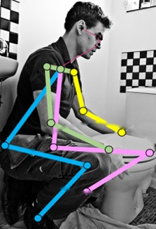
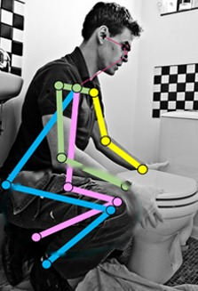

?
No ground truth at test time: is this pose right?


HRNet-W48 baseline
SCAI
left knee misplaced
left knee corrected
1 · map back, compare
2 · correct
self-check error
high
low
no ground truth
COCO test-dev · AP ↑
HRNet-W48
75.5
SCIO prev.
79.2
SCAI
80.6
+1.4
+5.1 over its HRNet-W48 baseline
check itself,
then correct itself